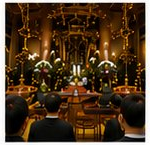

SERVICE
西方寺では、通夜・葬儀から年忌法要、納骨、永代経まで、さまざまなご供養を承っております。ご家族のご事情やお気持ちに寄り添いながら、丁寧におつとめいたします。まずはお気軽にご相談ください。

仏前で手を合わせ、亡き方を偲びながら、いのちのつながりに感謝するひととき。下記の法要を承っております。

後継ぎのご心配なく、永代にわたってお寺がお守りいたします。どなたさまでもお申し込みいただけます。

本堂に隣接した納骨壇に、大切なご遺骨をお預かりいたします。いつでもお参りいただける、屋内のおだやかな空間です。
「永代経」とは、亡き方をご縁として、永代にわたってお経が読まれ、み教えが受け継がれていくことを願うものです。あなたのお気持ちが、未来へとお念仏のご縁をつないでいきます。詳しくはお気軽にお問い合わせください。